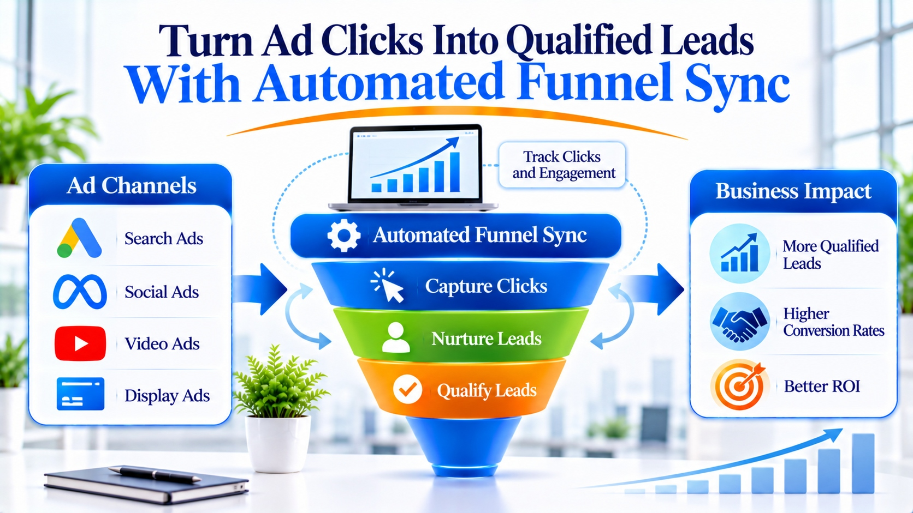

Turn Ad Clicks Into Qualified Leads With Automated Funnel Sync

Paid campaigns often fail after the click, not before it. Automated funnel sync connects ad platforms, landing pages, forms and the CRM so that every lead record is complete, scored and routed within minutes. Without it, leads sit in exports and spreadsheets, and the clicks you paid for go cold.
Where ad clicks leak out of the funnel
Most teams lose leads in the handoffs. A form submission lands in one tool, the ad click ID sits in another and the sales team works from a third. Duplicates pile up, source data goes missing and follow-up waits for someone to export a file.
Teams that want to close these gaps often invest in custom marketing automation services that link ad platforms, forms and the CRM through one set of rules, so a click becomes a clean, routed lead without manual copying.
What funnel sync actually moves
Sync is more than copying an email address. Each lead should carry the full story of how it arrived and what it did next.
- Click data: source, campaign, ad group and click ID.
- Form fields: name, company, role and the question the person asked.
- Consent: what the person agreed to and when.
- Behavior: pages viewed, files downloaded and email engagement.
- Outcomes: meeting booked, deal won or deal lost.
Five steps to a synced funnel
- Capture with tags. Add campaign parameters to every ad link and store them in hidden form fields.
- Normalize and deduplicate. Fix formats, validate emails and merge records that belong to the same person.
- Score and qualify. Combine fit, such as company size, with intent, such as pricing page visits.
- Route to an owner. Send each lead to the right person by region, segment or product interest.
- Return the outcome. Pass won and lost results back to the ad platform and the marketing tools.
Manual handoff versus automated sync
The table shows what changes once the steps run on their own.
| Area | Manual handoff | Automated sync |
|---|---|---|
| Lead arrival | Hours or days after the click | Within minutes |
| Data quality | Typos and duplicates | Validated and merged |
| Attribution | Often lost on the way | Campaign and click preserved |
| Routing | First come, first served | Rules by region, size and intent |
| Ad feedback | Rare | Sales outcomes sent back |
Qualify before you hand off
Sales time is limited, so not every form fill should reach a person. Score each lead on fit and intent, then set a threshold for sales-ready leads. Those below it enter an email nurture track instead. Speed matters at the top of the list, so alert the owner at once and track how long first contact takes.
Close the loop with ad platforms
Ad platforms optimize for the signal you give them. If that signal is a form fill, they find more form fills. When you send qualified leads and closed deals back as conversions, bidding shifts toward the people who actually buy. This is where funnel sync pays for itself.
Respect consent
Only sync what the person agreed to share. Store consent with the lead record, honor opt-outs across every connected tool and send ad platforms only the fields their policies allow.
Metrics worth watching
Track cost per qualified lead, time to first contact, lead to opportunity rate and pipeline created per ad dollar. Cost per click alone hides what happens after the visit.
Setup checklist
Frequently asked questions
What is automated funnel sync?
It is the automatic movement of lead data between ad platforms, forms, the CRM and marketing tools, so each record stays complete and current.
How is a qualified lead different from a lead?
A lead is anyone who submitted a form. A qualified lead also matches your fit criteria and shows enough interest to justify sales time.
Do I need a CRM first?
A CRM gives sync a central home, so it helps to have one. Even a simple CRM works if it can accept leads from forms and ads.
How fast should leads reach sales?
As fast as possible. Minutes is a good target for high-intent leads, since interest fades quickly after the click.
Can sync lower my cost per lead?
It can, mainly by cutting lost leads and by feeding better conversion data back to ad platforms so they target buyers more accurately.
Start with one campaign
Pick your highest-spend campaign, map its path from click to closed deal and fix the biggest gap first. Measure the change, then repeat for the next campaign.